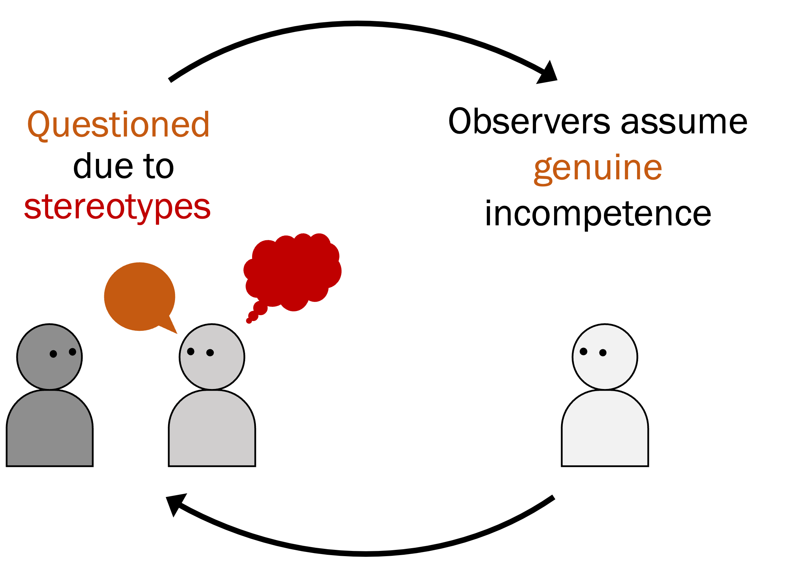

What's in a question?
Women (and especially women of color) report being challenged more often than male peers. Beyond making women feel unwelcome, I show that these questions can also devalue womens' credibility. In a study, two women provided information to a male character. He pointedly questioned one woman, asking, "Why would you say that?" But he endorsed the other woman's knowledge, asking a follow-up question to learn more from her. Concerningly, adults wanted to avoid learning from the woman who was disbelieved—even though they didn't know why the main character had questioned her.
These results demonstrate that our phrasing choices can have major effects on others' credibility. This suggests that a culture of asking genuine follow-ups (vs. assuming others are wrong) may increase women's credibility in subtle but potentially meaningful ways.

Why is repeated information so persuasive?
A recent analysis found that 80% of blogs denying climate change got their information from a single primary source (worse, this source had no formal qualifications as a climate researcher). But does this sort of widespread misinformation—involving the mere repetition of information across many sources—actually affect people's beliefs? We found that it does; adults seem to find widely-repeated information from a single source just as persuasive as information that is corroborated by multiple independent sources.
These results suggest we can be more mindful consumers of information if we consider where it came from. But on a higher level, this suggests that news aggregators and social media sites ought to cite their sources, explicitly warning readers when information is merely widely-repeated, and when it is independently generated by multiple experts.

When teaching goes wrong
If you're like me, at some point in your life you gave a passerby directions—and then a few hours later, realized your instructions were incomlete. Why do we sometimes make mistakes when we share knowledge with others? I find that when we teach, adults often assume others know more than they actually do. This leads us to be under-informative when sharing knowledge.
These results suggest that when we teach, we might benefit from spending more time figuring out what our learners know. And at a higher level, tools that help remind teachers what their learners know (and critically, what they do not) may lead to more effective teaching and learning.